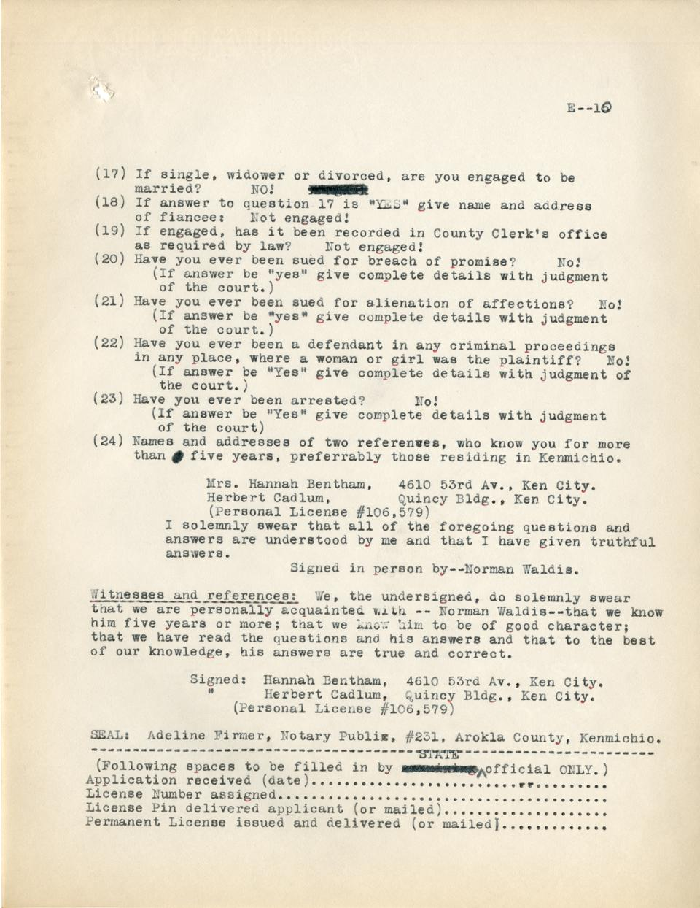
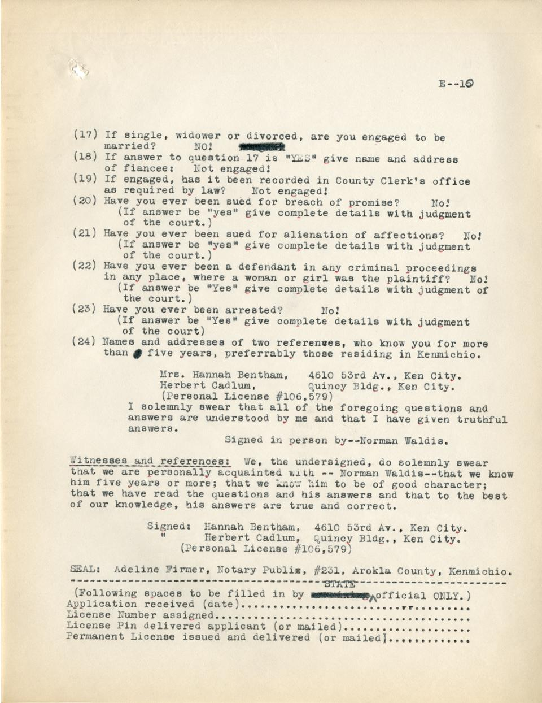

Kenmichio Goes Female
A novel by Eugene Eddy
Digital text prepared and annotated by Daniel Wescovich.
Author's Preface
This story is all fiction; nothing -- no character, no name, no event, has been taken from life. I have no desire to change the political situation in our country; I have no objection to women being in political office.The contradiction embedded in these two sentences is pervasive throughout the entirety of the novel. In one sense, we might be drawn to a recognition that they reveal the author's own contradictory attitudes regarding the evolution of women in the politics of the early part of the twentieth century; however, the deconstructionist in me is drawn to just how precisely this contradiction plays out.
Eugene Eddy
St. Louis, Mo.
May, 1934.
Chapter One: Entering Kenmichio
“Yep, George! Ken City is next–the Metropolis of Kenmichio! Home of the she-male politicians–the women run it–and how! No men allowed; woman governor! Women judges! Women police! Watch your step during your visit! Don’t flirt! Better get one of those dog licenses!"
The men uttering these words were momentarily clutching the top of the section of a Pullman car is a fast, lurching train. They recovered their equilibrium and went on their way laughingly and out of earshot of the brunette lady passenger near whose seat they had been forced to stop.
The lady herself, who had thus unwittingly heard their remarks, was seated in Section 7 of car 304 which was a Pullman sleeper attached to a train enroute from New York to Chicago; the train, even then, was in the outskirts of Ken City, “a city of over one million people” as its Chamber of Commerce boastingly stated; it was about seven o’clock of a fine May morning.
The brunette lady in Section 7 might rate in her middle-thirties; she was attractive, with flashing, dark eyes, set off by a rich, creamy complexion; she appeared to be slender as she sat alternately gazing out of the window of the speeding car and then, covertly, watching the man across from her in Section 8.
At that very moment she was thinking: “If that big, handsome man intends to remain in Ken City he should at least be slightly interested in me–for my position if nothing else! Even if I am twice divorced!”
Again, she looked out of the window, reflecting:
“Ouch! What a difficult man to become acquainted with! While this train goes on to Chicago, I know he is getting off at Ken City–heard the porter mention it a few minutes ago–wonder who he is?”
Her cogitations about her fellow passenger were cut short by an abrupt movement of the man across the aisle. Something which had flashed by his window must have interested him, she decided.
Of all the men in that train her eyes and her thoughts from the time they left New York the evening before to this moment had been centered upon the man across from her section. She had about made up her mind that he was between thirty-one and thirty-three. As the train had left its terminal the night before, she had instantly admired his alert, cultured face, his intelligent, assured look, his poise, his build; she had been wondering about his height; now in the morning sunlight she finally decided that he was more than six feet. His heavy brown hair and eagle brown eyes, surmounted by heavy eyebrows, set off his strong tan face. Had she been asked to describe the man by one word, she might have answered, “Reserved.”
Somewhat ruefully she recalled her attempts to make conversation with this fellow passenger between New York and Albany. She had commenced by offering him a New York evening paper. She remembered how formally, how very courteously, he had thanked her; stated he had read it. Chagrined, more at his manners than his statement, she had withdrawn within her shell. “Why is it,” she reflected, “that the men who make conversation easily with strange women, are so often the type a woman does not want to know?”
Beyond Albany, she recalled, their eyes had met momentarily; she asked him to lend her a pencil, explaining with an alluring smile that she had lost a gold one; and she remembered well how the powerfully built tan-faced man had silently proffered a pencil with a bow and in due time how she had returned it, again attempting light conversation for which she received a slight smile, a smile with lips only and with a minimum of words.
All of this passed through her mind this morning as she furtively studied her fellow passenger and the initials “NW” on his luggage and the pasterMis-spelling for poster or pasted? “Charing Cross” on his expensive suitcase which stood in the aisle; she endeavored, not too openly, to decipher another sticker, partly obliterated, “–asa” but gave it up.
The porter came to “NW,” brushes and whist-broom in hand; the big man stepped lightly to the aisle and was brushed. The lady observed with approval his fine blue suit bespeaking expensive tailor artistry. His intelligent, assured face set off his well-knit figure; she had the impression that the man was in strange surroundings. Yet, she decided, he was not awkward, for all of his deep color, for his bulk, because no man on the Limited was more agile on his feet and there was a suppressed panther-like grace about his every movement.
She wondered about the man; what made him different? He was certainly American; could it be the clothes? They seemed English; there was the “Charing Cross” label and that other, odd, partly obliterated sticker. She then decided that it must be the deep tan–so rich that it might have been termed weather-beaten in an older or less attractive man–which seemed to set him off from all of the usual run of soft, white-faced Americans.This description establishes caucasian as the default American, and suggests that the novel will adhere to discriminatory assumptions regarding race and gender.
The object of her curiosity extended a dark hand to the porter. The porter glanced speculatively at the green picture of Father George and tentatively hinted at change, making suggestive motions of diving into his pocket for silver, yet, expertly failing to emerge with it, but salaamed with a, “Thank you, sir–thank you, sir!” accomplanied with an unctious and rising inflection on the repetition and a grin from ear to ear upon being informed by the tan-faced man that the entire amount was conveyed by the deed of transfer.
As the Limited reached the thickly settled parts of Ken City, Mr. “NW” threw back his broad shoulders and exhibited manifest interest, in fact as his silent observer pondered, the only interest he had shown in anything since leaving New York the night before.
But perhaps we can leave this twice divorced, long, slender, vivacious, dark-eyed lady and her “for-my-position-if-nothing-else”–she’s only a woman anyhow!This is the first suggestion of a self-conscious narrator.
“NW” ran a competant hand through his thick brown hair observing with interest the entrance of the train into a subway; a distance of perhaps one mile was traversed and then the train rolled majestically into a magnificent station.
By that time the passengers were forming a line in the aisle.
The towering, tan-faced man scarcely noted the attractive brunette as she skillfully maneuvered a place just ahead of him; all unaware was he of her curiosity about him; he did not observe that the dark-eyed lady, when she reached the platform, was greeted and kissed effusively by a man and a woman and greeted as “Gen.”
Our manAnother expression of the self-conscious narrator. surrendered willingly to an eager redcap; he identified his baggage and followed his porter and the other passengers along the platform.
At the iron gate a woman in a uniform handed him a small booklet, with a courteous, “Police regulations, sir!” He took it, bowed and followed his redcap to the sidewalk.
He came out into a vista of modernity; a wide thoroughfare of concrete was before him; numerous automobiles darted by. He almost rubbed his eyes; he was aghast at the vast concourse, strange buildings, stretching away in the distance. Was this his home town? Mechanically, as if in a dream, he was aware of the porter placing his luggage within the taxi and that he tipped him.
“Where to, sir?” he was reminded by an alert cabbie.
“NW” turned to regard him. A trim girl of twenty-twoEddy's default descriptors tend toward age, weight, and height. A weird conceptual tic? On one hand, this suggests that his characters exist in a space where statistical demographics are the baseline when it comes to identifiable marks of human characters. It seems like these descriptions are stuck somehow on the shallow surface of what a person really is. On the other hand, this might also suggest some kind of development of the feminine wherein the beginning of the novel is hyper-attuned to the shallow marks of the demographic, the physical measurements of a woman that will soon be challenged culturally and conceptually as NW learns more about the nature of Kenmichio. met his gaze. Perplexed, he noticed other cabs, automobiles darting by–many driven by women. He seemed lost.
“Cab–pardon–Miss–but what street is this?”
“29th Street, sir,” she answered with a smile. As he appeared at a loss, she went on, “It is the West Side of town, sir, although close to the center part.”
Hat in hand he stared in perplexity.
“Miss, pardon me, I hope you’ll not mind the delay, I have been away from here a long time–seven years. That wide street or boulevard there, ahead of us–what is that?”
“Annabelle Parkway, sir.” To his next question, she replied, “It extends beyond the city limits, to 105th, sir.”
“Paper, sir!” came an interruption from a newsgirl, age about seventeen.
“Yes,” he answered, regarding her with frankly curious brown eyes. “Give me the…,” he searched his memory, recalling the Ken City Gazette, was attempting to think of…
“Gazette or Freeman, sir?”
“Both.”
Papers in hand, he still remained on the curb.
“1776, sir?”
The returned stranger stared at the cab-girl, mystification in his intelligent face. “Beg pardon.”
“Hotel 1776, sir?”
“Is that the name of a hotel?”
“Yes, sir–the best one for men.”
He stepped into the taxi. “Cabby–take me to the old Excelsior House–if it’s not pulled down–Do you know where it is?”
“Yes, sir,” she replied, as she sped away.
He attempted to orient himself and it was not until they reached Arokla Street that he recognized a landmark; it seemed like an old friend. He leaned forward.
“Arokla Street seems to have been widened, Miss.”
“Yes, sir–Arokla Boulevard now.”
“And what are those two handsome buildings–hotels?”
“Yes, sir, the one to the right is the Anthony Hotel, and the one to the left is the Hotel Mary, sir.”
Speeding along Arokla Boulevard, he was impressed with the air of cleanliness, spruceness, prosperity, heavy traffic. Substantial buildings, business places, lined both sides of the boulevard. He recalled clearly that seven years before, Arokla Street in that vicinity had been principally old-fashioned mansions of by-gone days, down at heels. Just then he spied a policeman–
“No, by St. Judas! A woman!” He turned to observe her. As he resumed his position he thought he detected a smile upon the face of his jehu.
Another block and he interrupted again:
“Pardon, cabby–but where is the street railway?”
“Taken up last year, sir–six track subway under this street.”
He observed women driving trucks, women driving other cabs and motor-buses, women driving private cars, some in livery. A blockade in traffic gave him an opportunity to observe the neat blue street signs, giving the name of streets in each direction, and the equivalent number of the nearest house in each direction!
“Have all the street names been changed, cabby?
“Yes, sir, with a very few exceptions–about four years ago. All streets running from east to west are numbered consecutively from one up, beginning at the river; they are called streets, All the streets running from north to south are numbered from one beginning at the eastern city limits; they are called avenues.”
Helplessly, he held his peace, vaguely noticing many large new office buildings which he did not place. Then, as he watched, they came to a small street, bisecting the boulevard, almost an alley; yet teaming with business. Yes, there it was, a neat sign: “Waldis St.” called after his great-great-grandfather–a pioneer of this new strange Ken City–and still carrying the old name!
The taxi passed the old city hall, his heart warming to it. They shot across what he had known as Main Street after receiving permission from a traffic officer in a tower–whose face seemed that of a woman! The sight of the old Excelsior House warmed the cockles of his heart; it was something to tie to the past. At the hotel he paid off his cab and was taken charge of by a porter.
Chapter Two: The Man From Africa
At the desk the traveller wrote firmly, easily, boldly with his powerful right hand, meticulously manicured:
NORMAN WALDIS, MOMBASA.
The elderly mail clerk, scanned the signature and the “Mombasa” and glanced at Waldis courteously, with a second surreptitious glance at the guest’s capable hands, at his easy grace.
“Long time since I have seen or heard of that name, sir. Wonder, if by chance, you are any relation to the judge–Judge Waldis–who died here in Ken City some years back?”
“My father,” the guest answered. Noting friendly interest in the greeter’s eyes, he added: “I have been away for seven years.”
“Been far, sir?” the clerk inquired, his eyes again on “Mombasa” on the registration card.
“Yes, Africa principally.”
In an old-fashioned high-ceilinged but cheerful room, Waldis bathed and changed. He had breakfasted on the train. For a moment he stood at a window and looked upon his native city, the he noticed the newpapers in his light overcoat pocket. He pulled them forth, and as he did, the small police booklet handed him at the train gate, fell to the floor. He picked it up, opened and glanced at the first page:
TO ALL MALE PERSONS OVER TWENTY!
The law of Kenmichio requires that all male persons who have passed their twentieth birthday and who intend to remain in the state more than Five (5) days must have a personal license.
Waldis ran his eyes down the page and succeeding pages, observing that travellers intending to be in the state a brief period had a form of temporary license, while those intending to remain in Kenmichio had a permanent type. Directions were given for securing the license from the proper law officers. Those in doubt were directed to ask the nearest peace-officer.
Suddenly he remembered his aunt.
“Fine nephew I turned out to be,” he muttered with a grin, reaching for a telephone book. He paged the Bs: “Bender–Benker–Benson–ha! Here it is: Bentham, Mrs. Hannah, 4610 53rd Avenue–Wonder where that is? Phone: Mary 3457–everything “Mary” in the old home town! Well here goes for a fine bawling out–hope auntie doesn’t drop dead from shock!”
While awaiting the connection he ruminated upon his absence from Kenmichio; the few letters he had written his aunt began to loom as insignificant. He had cabled her from Mombasa that he was starting home by slow stages–that he was many weeks back–he had thought of cabling from London, had not done so; nor had he wired or written from New York.
“Hello,” he heard.
“Are you Mrs. Hannie Benthan, please?”
“Yes, sir–who?”
“Hannie, old girl–how are you?”
“Normie!” she screamed. “You villain! When did you arrive? You mean boy–why did you not wire ahead? Oh, Normie–I’m so glad–and where are you now?”
“Excelsior House, Aunt Hannie. Are you going to be at home all forenoon–I’ll–”
“Yes, Normie–oh, do come out at once; I’ll be waiting, so impatiently. Please hurry.”
“Yes, Auntie, I’ll start at once. Remember now, no special preparations–I’ve had breakfast—”
“Never mind the orders, Norm–you come out at once!”
Waldis telephoned the desk and ordered a taxi, gave a last look at himself in the mirror and descended. At the curb he found another trim young woman in the driver’s seat of the taxi. Hand on the door, he directed pleasantly: “Drive to the nest candy store in town, please.”
The taxi threaded its way up Arokla and stopped at a store near 10th Street. “Yes, sir,” announced the taxi-girl.
“Wait, please,” he directed. Ten minutes later he came out with a large box. “Now, young lady–the leading florist.” The taxi-girl smiled her understanding and very soon he was in possession of an immense box of American Beauty roses.
“Now, Miss Taxi–drive to 4610 53rd Avenue–near the corner of 46th Street and 53rd Avenue, I have reason to believe.” He had written the directions from his aunt’s telephone instructions. “Take a short route, please–but if possible, follow some one of the new boulevards. Go via that–what is it? Ah-Annette Parkway?”
“Annabelle Parkway, sir–called after out mayor, Annabelle Fremly, sir–we will turn on to that at 29th Street–and use that as far as Mary Cort Boulevard, sir.”
“Did you say Mary Cort?”
“Yes, sir – Mary Cort Boulevard.”
As the taxi turned at 59th and Arokla, he observed again the two handsome hotels. Seven blocks west he saw the great K. & K. Railway Terminal from whence he had alighted but a short time before, then the taxi swerved into the vast thoroughfare at which he had exclaimed earlier–he caught himself estimating if he had ever beheld a wider street in his travels! As the taxi sped on he observed the handsome homes, neat, comfortable, each with a spacious plot of ground to itself. After about a mile the car turned into another wide boulevard–he caught the street sign: “Mary Cort Bd.” The taxi traversed Mary Cort Boulevard for a short distance and he noted with ever growing amusement the comfortable home life, urban life, in a district which he now began to recall had been truck farms seven years before!
The taxi turned again–to the right–a street sign read: “53rd Av.” After one more block the taxi pulled to the curb.
Waldis checked the house number: “4610.”
Even as the taxi departed, the door of the neat bungalow numbered “4610” opened and a small woman of possibly fifty-five came out to the porch. A smile of joy permeated her face. Yet, whatever she had intended to say was checked; her smile changed to a look of bewilderment; she stood speechless.
Waldis stood at the foot of the steps, looking up at her, grinning silently, then he took the four steps with one bound.
“Aunt Hannie!” he chuckled softly.
Mrs. Hannah Benthan gasped” “Normie–can it be you?” Her arms opened only to be folded within the powerful young giant’s arms during which he lifted her lightly from her feet. For the next few moments emotion overpowered them and they were somewhat incoherent. Then she cried: “Normie! You big bear–set me down!”
He complied, chuckling. Mrs. Bentham brushed away a tear. She stepped back to appraise her nephew.
“Oh, Norm–how you have changed! You must weigh two hundred!”
“One hundred ninety even, Aunty,” he replied.
“But come into the house, Normie–you look wonderful–and how tanned. And what hands! What did you weigh when you left here?”
“Oh, Auntie, possibly about a hundred forty,” and then he handed her the flowers and candy receiving more hugs and kisses and a bombardment of incoherent questions. He did his best to answer her.
At last she broke in: “And you poor boy, how long were you a prisoner with those horrible cannibals?”
“They weren’t cannibals, Aunt, just savages. I was their prisoner six months–that’s five years ago.”
“Six months a prisoner with savages? You must be starved; I’ll order something to eat!”
“But, Auntie, I ate on the train; I’m not starved. And I have baggage at the Excelsior House.”
“Then you’ll have it brought here at once. I live here alone with one servant–you are my only near relative–shame on you not to write more.” Waldis expressed penitence. Hannah Bentham went on, “You will live here–”
“Pardon me, Auntie, but I won’t sponge on you–I have three trunks in the baggage room.”
“Send them here, Norm. you will have a nice room–after seven years globe-trotting, mine-digging, savage-fighting–you ought to settle down, live a respectable life. I am fifty-seven, Norm, and lonely. I’m so happy to have you home.”
“Auntie, I’m grateful for this wonderful reception, yet, after making a fool of myself in that mining scheme in Africa and losing the little fortune father left me and now coming back with a pittance I don’t propose to live on you. Intend to get out and hustle. Since you have welcomed me so kind,” he hesitated a moment, then resumed, “I will visit with you a few days until I get my bearings.”
“Normie, we won’t argue it now. Luncheon will be soon. Then after luncheon go to your hotel, move your bags, trunks here. And did you lose all your money in that mine?”
“Every cent, Auntie, also the money I secured by mortgaging the family homestead on Birren Street–well, the good old house is gone!”
“No, it isn’t! I bought the mortgage. When it came due and nothing was heard from you, my lawyer advised me to foreclose and take title–but, Norm, it’s yours–I’ll deed it back.”
“Oh, no, Aunt Hannie, why?”
“You are my heir, anyhow, my will leaves everything to you–so I might as well.”
“Aunt, pardone me. I couldn’t think of accepting it. Let things as they are; a monument to my youthful folly.”
“Youthful folly? Do you think you are old at thirty?”
“Aunt, twenty-three to thirty, while but seven years, has made a change in me I hope. I would be hopeless were it otherwise. I do not return penniless. When I left Mombasa, about three and a half months ago, I had the equivalent of about $3500 in American money. I spent about $1000 since then. So I have about $2500 and my two hands.”
Hannah Bentham gazed upon the aforesaid hands.
“Judging by the two hands, Norm, you won’t starve. But all this is but a detail. You won’t have to worry. I’ll be glad to have you with me–I have enough for two. I am renting your old home to a good tenant; then I own this bungalow and in addition two flat buildings, all free and clear of mortgages.”
“Fine, Auntie,” Norman said with a grin. “Glad to learn that you are such a shrewd financier, that at least one Waldis knows how to hold on to money; I fear that I may never learn it. Yet, I intend to earn my keep. By the way,” he rose to his towering height and stood before some large framed oil paintings. “Aunt, I see the ancestors’ pictures. There’s grandfather Elisha Waldis in the rig of fifty years ago–and father–and–” he paused in silence.
“Yes, Norm, there’s your mother,” and as they stood before the painting of Waldis’ mother, the mother who had died in his infancy, leaving him to a heart-broken father, whose picture he next observed. Hannah Bentham went on, “And, Norm, you’,l be glad. I had all your books, histories, lawbooks, everything boxed up–they’re in my basement–are you still such a student?”
“Well, Aunt, I suppose, but for seven years the problem of life itself has been so immediate, haven’t had time–speaking of life and earning a living–you know I was admitted to the bar as a lawyer in Kenmichio, with only a year and a half of practice, before I went to Africa–what is this about women running Kenmichio? And who is Mary Cort?”
Chapter Three: The Exiles at Homefield
Hannah Bentham explained about the political situation in Kenmichio to her Nephew.
“Politically, the women control Kenmichio, Norm. Mrs. Mary Cort is the leader of the Anthony Club, the leading political organization of this state. Her oldest daughter, Dena Cort, is the governor; Annabelle Fremly is mayor of Ken City.” At the look of astonishment on Waldis’ face, Mrs. Bentham remarked: “But Norm–even if you have been away–you know about this?”
“Aunt, picture me! In Africa working at the mine which I had purchased with the fifty-thousand father left me; I was nicely swindled of course; that was six to seven years ago. It was vary rarely that I saw a Ken City newspaper or any American newspapers for that matter. Then, five years ago, convinced at last that I was stung–flat broke–and heartsick over it, I joined the expedition of an English explorer and plunged into the interior. Everything was primitive; no newspapers. Two days before New Years Day five years ago, I became separated from our party, wandered around lost and fanially was made prisoner by a tribe of savages. And di they work me? And did I learn to fight? I escaped from the savages eventually, intending to make my way to the coast. But I caught jungle fever; providentially I was found by friendlyHand-written correction. Orig. reads “kindly” missionaries who nursed me back to health. I came out of that and after much travail finally reached a coast city. That brings my experiences up to three years ago, or to be exact, thirty-eight months ago. I saw my first newspaper then, a London paper. I wrote you then.”
“Yes, Norm, I remember that letter–but you didn’t say a word about being penniless–you cruel boy–here I am with plenty!”
“Yes, dear aunt, I know you would give me all you have but I was resolved to rehabilitate myself through my own efforts. The next six months to a year was very uphill work, Auntie, yet it was healthful outdoor work and life; I thrived on it. I learned the ropes, made a living, then did a little better, enough to save some. Enroute home I tried to glean from the papers at my command, all British, what was going on in old Kenmichio–couldn’t make sense out of what I read–did not believe it, in fact it seemed too Hand-written correction. Orig. reads “to” fantastic. But I had no idea you had 100% women state and city officials!”
“Yes, Norman, a woman governor, women mayors, judges–a woman is chief of police in Ken City–Kate Umler–best we ever had!”
“Yes, Auntie–I saw the women police–tell me more about Mary Cort!”
“She is head of the Woman’s Party, something similar Hand-written insertion. to typical American political bosses, but a clean woman, Norm. The whole movement originated when Mrs. Cort discovered that there are more women than men in Kenmichio, so she organized the Anthony Club for women only! I belong to it. Of course, Norm, with me, it’s more a hobby, social; I don’t understand politics. I happen to possess a book, purchased recently, called: Leaders of the U. S. A. There is an authentic, honest article in it about Mary Cort. I suggest you read it carefully today or this evening. And by the way, your friend Lizzie Wortlay is high in the party and state–she is attorney-general–they call her the ninety-six pound legal giant!”
“Do you mean the Miss Wortlay who worked for father–in his office?”
“The same, Norm.”
“Aunt, you astound me–I presume a mere man practicing law here is a monstrosity?” His manner indicated he was joking.
“That is correct, Norm. Legally you may practice–actually you will have no chance as a lawyer in Kenmichio!”
Waldis stared. “You mean that seriously, Aunt Hannie?”
“Yes, Norm. However, you’ve been away a long time–be patient–live comfortably with me–get your own perspective.”
Luncheon came on and family matters were discussed, Mrs. Bentham referring affectionately to Judge Waldis, Norman’s deceased father, her only brother.
Luncheon over, Waldis asked: “Are there no streetcars, Aunt? I want to go back to my hotel, check out, arrange for my trunks.”
“Just a few street cars remain, Norm. Mary Cort and Anna Fremly will abolish those soon. You know in this particular district, say, west of Annabelle Parkway and north of 29th Street, no street cars are permitted, but now Hand-written insertion. that they are gone, we are glad of the fast comfortable buses and Hand-written insertion. subways.”
“By the way, Auntie, do women run the subways, buses, that is manage them–act as superintendents?”
“Yes, Norm. There is a woman general manager of the whole thing–runs it like a man–Edith Klemmas. And Norm, to get downtown quickly and cheaply–go to the nearest corner, then continue one short block west to 54th Avenue–there take the new 54th Avenue subway–get off at City Hall–there you are.”
Some hours later, Waldis was installed in his aunt’s home, bags and trunks all moved. After dinner Mrs. Bentham placed in her nephew’s hands the copy of Leaders of the U.S.A; he turned to the article on Mary Cort.
He observed that it was a long article and settled himself to it attentively.
From Leaders of the USA:
Cort, Mary. (Widow, Wm. Cort) Woman politician. Residence, 7600 Mary Cort Bd, Ken City, Kenmichio, U.S.A. Born on a farm near Wallace, Sylvan County, Kenmichio, U.S.A. Mrs. Cort, daughter of poor farmers. Parents, Daniel Merton and Jessie Angers. Ancestors, New England Yankees. She received meagre schooling, left school 14th year. Married William Cort, bricklayer. The couple moved to Ken City where her husband went into ward politics making progress as a party man. Mary Cort was a loyal devoted wife assisting her husband with politics when domestic duties permitted. The Corts had three children, all living: Dena Cort, daughter, now governor of Kenmichio; Merton Cort, son, living in New York; and another daughter, Norine Cort, a minor. Mary Cort early realized her lack of education and when her eldest daughter, Dena, was in grade school Mary herself took a correspondence course. With the advent of her daughter Dena in high school, Mary Cort studied and followered her daughter’s textbooks. Mrs. Cort’s happy married life terminated with the death of her husband eight years ago. Coincident with the women of Kenmichio receiving the vote on equal terms with men, William Cort had taught his wife the rudiments of political ward organization and before his death, had encouraged her to organize the women voters of Ken City. At his death, Cort left his widow a modest sum of life insurance. While Mary Cort was heartbroken at her husband’s death, an election was immanent! Her husband’s political associates, aware of her women’s organization and already sensing her marked political ability, importuned her assistance so that she had to emerge from her mourning. But, she became exasperated at the male politicians and their selfishness and formed the Anothony Club and the nucleaus of the now famous Woman’s Party. She had met and made friends and adherents of Annabelle Fremly, a young society woman (Annabelle Fremly, now 38, Mayor of Ken City), Mrs. Freda Hegler (now 54, lawyer and successively first woman circuit judge, Ken City, later member of Congress, now President of the City Council, Ken City, also Vice-Chairwoman of the Executive Committee, Anthony Club), and Miss Elizabeth Wortlay (Miss Wortlay, 47, lawyer and successively Assistant U.S. Attorney, Mayor Ken City, and now Attorney-General of Kenmichio; said to be the first woman in America to hold the highest law office in a state). These three women friends and co-workers of Mary Cort represented different strata of life. Mrs. Fremly, born aristocratic; Mrs. Hegler, sociological work; Miss Wortlay, trained as a corporation lawyer. The membership of Mary Cort’s Anthony Club grew to astonishing proportions. 80,000 women were enrolled as active members. They captured the machinery of the dominant political party of Kenmichio. As a result the woman’s party sent an entire feminine delegation to a national presidential convention. In the Ken City elections seven years ago, Mrs. Cort elected Winifred Dane as a second circuit court judge (Mrs. Dane is now Chief Justice, Kenmichio Supreme Court), and elected eight women to the city council of 21 members. At the legislative election six years ago, Mary Cort elected women sufficient to control 60% of the state legislature. The men of the state, regardless of previous political affiliation, combined forces in a Fusion Party. The next election took place four years ago with the Woman’s Party sweeping the cities as well as the towns and farms. Mrs. Betty Allert (now member of Congress) was elected as state governor. Three vacancies on the state supreme court were at the moment at the disposal of the woman governor. Under Mary Cort’s directitons, Mrs. Allert appointed three women. About that time, Genevieve Tulevy, divorced, a woman lawyer of New York, migrated to Kenmichio, joined the Anthony Club and soon became a prominent assistant of Mary Cort. (Miss Tulevy is now 34 and prosecuting attorney of Arokla County, Ken City, said to be the first time a woman has been chief law enforcement officer of a metropolis.) The last election stupefied Kenmichio, the whole 48 states and provoked world wide comment. Mary Cort’s name began to figure in the cables. She now had complete political control of the state of Kenmichio, among the first six in importnace in the American union, with about 4 million people. Many changes in the laws, some radical, have been made by Mary Cort, come of the new laws going to the highest american courts. A number of the new Kenmichio laws have been decalred unconstitutional by the federal court, while wothers, notably the famous personal license law for men, have been upheld. Mary Cort has never stood for election of held political office. She is Chairman, executive committee, of the powerful Anthony Club. She is now 48 years of age.
Some time later he looked up to encounter his aunt’s eye.
“Interesting, Norm?”
“Very, Aunt. Mrs. Cort certainly had a spartan beginning in life. I see the article mentions that Mrs. Cort has a son living in New York, Aunt.”
“Yes, Norm, a no account fellow, confidentially; I’m glad he stays away, but Mary grieves about it.”
Waldis resumed his reading and at the part about the women controlling the state legislature, he stopped for a moment, recalling that in some place he had read that the women had abolished the state senate and thus had but one legislative body for the state.
He noted the reference to Elizabeth Wortlay in the account of Mary Cort’s life with great interest; he summoned to mind his recollection of little Miss Wortlay when she was one of his father’s law assistants, during his own childhood and youth.
“What do you think of it, Norm?” Hannah Bentham asked, as he laid down the volume.
“Quite interesting, Aunt; must be an extraordinary woman.”
On the following morning, Waldis went downtown to look up an old schoolmate and college pal, Herbert Cadlum, expecting to find him practicing law but to his surprise the sign on the door of Cadlum’s office in the Quincey Building on Arokla Boulevard, read: Herbert Cadlum, Chemist.
Within the small office, Waldis instantly recognized his friend, a sandy-haired man: Cadlum was busy staring out of his office window. He turned to the visitor, asking courteously, though impersonally, “What can I do for you?”
Waldis stood grinning; Cadlum stared.
“Bert, old boy!” said Waldis quietly.
“Norm–Norman Waldis! Shades of Confucious–say for the love of Bloody Mary–leggo that hand! You have a pair of grippers–by gosh, the prodigal has returned! Where did you drop from?”
“Reached town yesterday, Bert–staying with my Aunt Hannie on 46th Avenue a few days.” Another of Eddy’s signatures is a weird attention to location. He often notes the addresses of places his characters are travelling to, and to the nature of the streets that are being travelled.
“Fella, you have color! Did you varnish your face in Africa, or rather did those old savages do it? A key feature of Waldis’s descriptions is his tan. The narrator, as well as many characters (here it is Bert) take note of his tan. In this instance, there seems to be the suggestion that his tan is related to questions of race, which are further assumed to have infuence on his behavior and attitudes. It might be concluded here that since Waldis has a tan, it could be assumed that he is going to be one of the only men who can properly understand the women’s movement in Kenmichio, that somehow his tan (associated with his time in Africa, with the savages, no less) will be an indicator of his attitude. Here we see the conflation of gender with race. And what a burly bozo you have become, say I! Where did you write me from last?”
“Mombasa, Bert.”
“That’s it, Mombasa. You wrote me you had been a prisoner–and those mits! You been working with pick and shovel?”
“Right, little brain work, mostly handwork,” chuckled Waldis.
“And you lost all your dough in that damn mine?”
“Down to the bottom!”
“Tough, fella.”
Much interchange of reminiscenses took place, then Waldis burst out: “But, Bert–you graduated with me as a lawyer–why the chemistry–though I recall you were partial to it?”
Cadlum stared rather sourly at this friend.
“Lawyer! Shucks, Norm–were there no newspapers in Africa? Surely you know what’s happened in our beloved Kenmichio?”
“Tell me.”
“Tell you? I will! A man cannot practice law in Kenmichio and earn a living, that is with certain narrow exception. Only women lawyers win cases. For any client to employ a male attorney means sure defeat! What with women judges, women juries.”
Waldis interrupted. “Did you say women juries? Why not challenge, get some men–men must be called on the panel!”
“Challenge hell!” rejoined Cadlum wrathfully, “the women have changed the state laws regarding court procedure–among them they have reduced the number of peremptory challenges–no change in challenges for cause. The challenges for cause are passed upon by a woman judge–she overrules men lawyers, say I!” This is one of the first times Eddy begin to show a little of his legal training that he talks about in My Literary Experiences.
“Appeal it!”
“Appeal it? With five women and two men judges on the state supreme court?” Cadlum threw away his cigarette, and went on: “So you old college chum–rather chump, I should say, is a chemist. By the way have you seen Doc Makon?”
“No, Bert, haven’t seen George–and did he graduate as a doctor? Do the women permit male doctors to practice?”
“Bloody Mary lets the medics alone, Norm. Has to! Can’t make women doctors as fast as you can turn them into politicians, or lawyers, for that matter! Makon graduated but of course he has no practice yet; he’s an intern in the new Judson Gorge Hospital–Judson Gorge built the hospital–Gorge fights the women–suppose you haven’t forgotten who he is?”
“Of course not, Bert. Gorge’s name and his millions and his great products are known even in Africa–but Holy St. Judas, who is Bloody Mary?”
“You serious, Norm?”
“Yes, remember seven years is a long time to be away; Aunt Hannie gave me a brief resumé, that’s all.”
“Well, Norm, I thought Mary Cort was known as far as Cathay!”
“Wait, Bert–then, by Bloody Mary you refer to Mrs. Mary Cort–I read something about her last night in a book Aunt Hannie has.”
“The same, say I. Bloody Mary is what the men call her–Mrs. Mary Cort, relict of politician Bill Cort; she is the machine political boss, Cromwell, dictator–what you wish, of our home state, Norm. Technically, her title is Chairwoman of the Anthony Club, all female with few exceptions, save for a few men gigolos or squaw men–probably the most powerful political organization in our country. All old maids, widows or divorced–men-haters all, say I!” With a serious face, Cadlum paused, then added suddenly: “But let’s get Doc Makon on the phone and have a reunion at lunch.” Without awaiting for Waldis’ comment he took up a desk telephone only to learn that Doctor Makon could not leave his hospital for luncheon.
“Dinner tonight, then, Doc? Waldis is back after seven years–yes, right here!” Cadlum handed the telephone to Waldis. “George wants to greet you.”
Waldis took the telephone. “Hello, George, how does it feel to be a sawbones? Yes, yesterday–yes seven years bad luck! And, George, Bert Cadlum and I want you to have dinner with us tonight–No? Too bad. Where did you say? Homefield–where is it?“
Waldis was interrupted by spasms of laughter and snorts of derision upon the part of Cadlum the silent listener. He turned again to the telephone: “George, Bert Cadlum sitting here beside me is mildly insane–what is the joke about Homefield? The what? The home of the exiles! What exiles? Are you kidding–wait,” Waldis turned to Cadlum, “George has a dinner engagement with two other friends at Homefield, MoradaMorada is the name of the state adjacent to Kenmichio. Why does Eddy invent fictional states to exist within the US? According to earlier geographical descriptions, these states seem to be located where we might expect Pennsylvania, Ohio, or Indiana to exist (between Chicago and New York). It's weird because Eddy retains Chicago and New York, but the location of his narrative has to take place somewhere fictional. It's almost like he cannot fathom what he is describing as being able to take place in the real world. tonight–he is enthusiastic about taking you and me along.”
“Tell him OK–we meet here in my office any time after 4:30–when you hang up I’ll tell you the sad story of Homefield!”
“All right,” said Waldis a moment later.
“You know, Norm,” Cadlum began, “you are a regular Rip Van Winkle. It will take you three months to inhale our modern Kenmichio. Old fellow, Homefield is the first city in our neighboring state of Morada–and I hope you haven’t forgotten that Morada bounds our state to the south–Homefield is two miles beyond the Kenmichio-Morada state line. In your time Homefield was but a hamlet; it is exactly forty miles from my office on a fine hard road–it now has a population of 75,000 souls–might say lost souls! Most of them are exiles from Kenmichio, principally from Ken City.”
“Exiles–in our good old USA?”
“Yep! They are chaps, male, who had to leave our state in a hurry–for one reason or another–account of the new laws of the women. The result is that they live near us but not of us, yet safely across the state line. Morada has become a regular he-man state and is very chary of letting a man be extradited by Bloody Mary, short of murder of course. So when the remaining men of Kenmichio want to foregather with banished or exiled friends or see a real entertainment–or have a real he-man’s time, we go to Homefield! Bloody Mary has almost stopped night life in Kenmichio, therefore, tonight we will show you–but let’s go to lunch.”
After luncheon Waldis bid his pal a temporary goodbye and strolled to the nearby Arokla Building, home of the K & K Railway Law Department to renew his friendship with ex-judge Thomas Selmage general counsel of the railway and a former law assistant to Waldis’ father; the judge’s secretary advisesd Waldis that the K & K law chief was out of town.
About five o’clock found Waldis, Cadlum, Makon and two other men of their age enroute to Homefield. Makon, driving, explained to Waldis the comparatively slow speed by stating that the traffic laws of Kenmichio, with the advent of women to power, were very severe.
Waldis spent an interesting evening in Homefield, discovering old friends and meeting new ones. He came to the conclusion at the end of the evening that Homefield was a rather “fast” city and it seemed to be waxing wealthy on its ill-gotten gains, mostly Ken City money, the “exiles” laughingly explained. They spent their entire evening at the leading entertaining place, the Exiles Café, where excellent food, exhilerating beverages and a good floor show were the order of the evening with dancing at intervals.
Chapter Four: Waldis Meets Mary Cort
Waldis and his aunt, at her request, spent the next day on business matters connected with her real estate, although he had remonstrated that he was not interested in her property in any way other than to see her enjoy it.
As Mrs. Bentham knew that they were to spend the evening together, she announced at six o’clock that “Lizzie” Wortlay, the attorney-general of the state, was expecting them at her home after dinner, hence the aunt and nephew alighted from a taxi at the little woman lawyer’s home at the corner of 76th Avenue and Mary Cort Boulevard about 7:45.
During the ride in the taxi, driven by a woman, Mrs. Bentham had explained to her nephew about the “Famous Four Corners” of Ken City at 76th and Mary Cort Boulevard. Waldis learned that four of the prominent leaders of teh Woman’s Party–Mary Cort, Elizabeth Wortlay, Annabelle Fremly and Freda Hegler–had each purchased, by agreement between them, a corner lot and built their homes in the respective four corners.
As the taxi drove away, Mrs. Bentham pointed:
“Norm, there is Mary Cort’s bueatiful home across the street–that is the house paid for by the women of Kenmichio donating five cents each. Is it not a magnificent tribute?”
Curiously, Waldis looked as directed, an arc lamp anabling him to have a fair view.
Elizabeth Wortlay, attorney-general of Kenmichio, gave them a warm reception, greeting Hannah Bentham: “Hello, Hannah,” then extending both hands to Waldis. She had to look up to him as she spoke: “And Norman Waldis–what a picture of health! You have filled out,” and almost a tear in her eye as she mentioned Waldis’ father, Judge James Waldis, whose stenographer and office assistant she had been in early days.
Waldis looked down at the ninety-six pound woman, with the face and figure of a girl, a complexion like wax, topped by silver hair, realizing that while age was in Miss Wortlay’s hair, time had been kind with her sweet face. He had known her since he was child. She did not look the forty-seven years credited to her in Leaders of the USA.
About nine o’clock a servant announced to Miss Wortlay that Mrs. Mary Cort and daughter Norine were in the living room.
Dainty little Miss Wortlay smiled, as she excused herself:
“Hannah, Norman–I’ll see what Mrs. Cort has called about; if it’s not state business, if she has time–I want Norman to meet her.”
As Miss Wortlay left them, Hannah Benthan turned to her nephew with a flushed face:
“Norm, now you will meet Mrs. Cort and her daughter. It is just as well that you meet Mrs. Cort in this accidental manner. I hope you like her, Norm, she is a wonderful woman.”
There was a frank curiosity and some inward chuckling on his part as he listened to his aunt; he looked forward to the meeting.
However, instead of being summoned to the living room, Miss Wortlay entered the sun parlor where Mrs. Bentham and Waldis waited. She was accompanied by two women.
The first woman, the oldest, was tall, Waldis’ initial impression being of her square shoulders; Mary Cort had a plain face, clear eyes. Her head was covered with thick, dark, unbobbed hair, well-sprinkled with gray. She had no hat, nor did the younger girl behind her have one. He knew, now, that they lived across the street. From his reading of Leaders of the USA, he was aware that Mrs. Cort was forty-eight years of age; he judged her height to be about five feet eight and her weight around one-hundred fifty.
He observed that the female political leader had clear gray-blue eyes which met his own appraisingly, tranquilly. Lovely doll-faced Elizabeth Wortlay introduced them.
As Waldis bowed from the waist, silently, Mary Cort extended a capable hand, which he took, receiving a firm handclasp. In a voice hardly as deep as one would expect, yet, a voice denoting authority, command and accomplishment, she greeted him:
“Welcome home to Kenmichio, Mr. Waldis. I have heard of your return.”
He uttered a few safe conventional words.
All this time there stood beside Mary Cort, pensively awaiting recognition, a slip of a golden-haired girl, a vision of blond loveliness, height scarcely an inch or so above five feet, dainty, slender, possibly a little over one hundred pounds of daintiness, large baby-blue eyes, alluringly shaded by long eye-lashes. Waldis estimated she might be twenty.
As Miss Wortlay made the introductions, the dazzling little golden-haired bueaty gazed up trustfully into the big man’s tanned face. Miss Wortlay went on: “Miss Norine is Mrs. Cort’s second daughter–her eldest daughter, Miss Dena Cort, is the governor.”
And Mr. Waldis bowed politely to Mary Cort’s youngest daughter.
Elizabeth Wortlay invited them to be seated. Mry Cort mentioned, conversationally, that she had often heard of Waldis’ father (Hannah Bentham’s brother) but had not known him.
Waldis realized that this woman’s picture was in many public places.
The three older women carried most of the conversation, with some questions now and then asked of Waldis.
Golden-haired Norine sat silent and pensive, taking little part; casually she permitted a fleeting glance from her baby-blue eyes towards the big, tanned-faced man who sat so quiet.
Suddenly Mary Cort sat up with a start and reminded Elizabeth Wortlay that she wanted to telephone and with apologies the two women left the room. Hannah Bentham exhanged a few desultory words with Waldis and Norine, then she too, with an apology followed the other women.
Waldis’ eyes happened to be on a cabinet radio near him. Norine Cort caught his glance.
“I suppose, Mr. Waldis, during your long residence in wild places, you did not have radio programmes–shall we have some music? Miss Wortlay won’t object,” said Norine.
As the two young people stood before the radio, he explained that he was aware of vast improvements in it during his long absence in Africa.
“Yes, Mr. Waldis–please tell me about Africa–I’ve heard so much about you.” She paused, then added softly: “And how tanned you are!” Those were her uttered words! But her trustful blue eyes said plainly, topped as they were by the golden ringlets: “And, oh, you big, wonderful man!”
Miss Cort then brought forth a jazz orchestra on the radio; Waldis made no effort to compete with that by telling her about Africa.
The three older ladies soon returned and the conversation became general. A short time later, Mary Cort and her daughter left for their home across the street. Before leaving, Mrs. Cort gave a conventional invitation to Hannah Bentham and Waldis to call at her home.
Waldis commented to his aunt later, that Mrs. Cort seemed self-possessed and able; he admitted that he was agreeably surprised.
“Norm, I told you she is a wonderful woman; it is shocking, the things that have been said about her. She has cleaned up Kenmichio; the jails are almost empty; the police have little to do. You know, Norm, she seemed to like you!”
“Like me, Auntie?” he ejaculated, as if from a dream, as their taxi rolled them towards home. “I scarcely noticed that.”
At the breakfast table Waldis noting the Gazette, more out of curiosity than for any other reason, asked if his aunt took the Freeman.
It provoked a retort from the usually placid Hannah Bentham that “that vile paper” would never come into her home!
Things forbidden are always tempting so on his way downtown he purchased a copy of the Freeman from a newsgirl at the subway station. Idly, he paged it, then paused in real astonishment!
NORMAN WALDIS BACK IN TOWN
After seven years absence in Africa, Norman Waldis has returned to his home town of Ken City. Mr. Waldis has had an interesting time away from Kenmichio if reports are correct. The name of Waldis is not unknown in Ken City or in the state! Norman is the only descendant of a former judge and the grandson of Elisha Waldis who in his day was mayor of Ken City and a supreme court judge. Waldis’ great-grandfather was a railroad builder and his great-great-grandfather was a pioneer of Kenmichio. Mr. Waldis is a lawyer as were many of his forbears, but we predict that he cannot make a living in his old home town and we wonder if the shades of his ancestors, men who have written their names high in honorable deeds in the Kenmichio Hall of Fame, will rise in the wrath at the plight of their MALE descendant, home now and unable to practice his profession.
When Waldis left Kenmichio seven years ago he was, while tall, a slender stripling of thwenty-three; he returns a six foot two inch giant, tan faced, square shouldered, a veritable he-man. To whatever he turns his capable hands, he is welcome home by the MEN of Kenmichio. The Waldis stock has ALWAYS produced upstanding men, men afraid of nothing, men unafraid to act upon their convictions.
Welcome home, Norman Waldis!
He left the subway at City Hall and proceeded to the office of his pal, Herbert Cadlum, in the Quincy Building. Cadlum arranged by telephone a meeting with their schoolmate, now Doctor George Makon.
The three were to take luncheon at the coffee shop of Hotel 1776.
Waldis, accompanied by Cadlum and Makon, approached the famous hotel with curiosity. Cadlum had been regaling him with details and gossip of the situation between the women and men of Kenmichio and how Hotel 1776 had been founded and erected by rich old Judson Gorge, the manufacturer.
“Read the cornerstone, Norm!” chuckled Cadlum.
Waldis read the chiselled inscription:
Hotel 1776
Dedicated to free men only.
No female shall ever cross the threshold!
“Old man Gorge is one of the firiest boys Mary Cort had to fight, Norm. He is worth from two to three hundred million bucks now and the women have never subdued him, say I. probably he is the only man in the state who holds out against their absolute sway! His big plant is just beyond the city limits; when they got ready to bottle him up, he said he’d move the whole business just over the state line and as he employs seventy thousand men, who would thus have been out of employment, the women backed up.”
“But, Bert,” replied Waldis, as the three friends were taking seats at a table in the cafe of the hotel, “what was the occasion to quarrel with Mr. Gorge?”
Cadlum waited until the order had been given and the waiter had departed, when he leaned over to Waldis and whispered: “Norm, old Judson Gorge, age 65 has a fair lady–a lady of the chorus, a beauteous dame called Sevilla Linnfield, blond and dangerous. She dropped into Ken City a few years ago; Judson Gorge, with a wife age sixty–no children–was never known to look at a woman; he met Sevilla, with the result that she left the show and has remained in Ken City ever since, living in an expensive apartment. Gorge is infatuated with her hopelessly. Naturally, his elderly wife complained; the Woman’s Party who had been looking jealously at Gorge’s millions and recalling that he had built this very hotel, the 1776–as a monument to his antagonism against woman’s rule in Kenmichio–sent an emissary, a lady named Annabelle Fremly, who by the way is now the mayor of Ken City and one the social luminaries of the town and a big leader in the Woman’s Party.”
Cadlum stopped abruptly. “There’s old Judson Gorge now–and say, Doc,” Cadlum lowered his voice, addressing Makon, “your boss is with him. Norm, for your benefit, the middle-aged man with Gorge is Doctor James Martin, chief-surgeon of the Judson Gorge Hospital, Makon’s boss. Those two are always together–funny thing, too. The women detest Gorge–while Martin the great surgeon, though not against any party, for his great operations, his humanity, is beloved by all. Doctor Martin even saved the life of Annie Kuhlers!”
Cadlum, realizing Waldis’ lack of knowledge of things local went on to explain that Captain Annie Kuhlers, of the police, was head of the famous Ken City cleanup squad, that in a battle with gangsters she had been terribly shot up, that Martin saved her life.
Waldis looked at the portly Judson Gorge, his massive, leonine head thrown back, as strolling by slowly, with Martin at his side, he nodded right and left.
“And Bert–you say Miss Fremly was sent to see Mr. Gorge by the women?”
“She is Mrs. Fremly, Norm–divorced lady. She is the woman who put through our easy divorce laws, that is, easy for women. Bloody Mary Cort, herself, is a clean-living woman and if report has it correct, she fought Annabelle Fremly on the subject of the easy divorce laws but Annabelle had her way. But to get back to Mrs. Fremly and Gorge! She called upon him as a duly accredited emissary of the Woman’s Party–and today that is Kenmichio itself, say I. In a soft, delicate way, she told him that he must get rid of Sevilla Linnfield! There was a roar from Gorge–he gave our gorgeous Mayor Annabelle the air–put her out of his office. The inner circle of the Woman’s Party, the Anthony Club, held a council of war. It is said that they delivered him an ultimatum–he replied that he would dismantle his vast plant just beyond the city limits–move it bodily to Homefield, Morada, where we were the other night–with his 70,000 employees!”
Cadlum continued: “The Women backed up then, they couldn’t do anything else. However, they have subjected Miss Linnfield to a lot of petty persecution but she remains in Ken City and still spends Judson Gorge’s money. What the upshot will be, no one knows.” Their luncheon arrived and they gave over high politics for the moment.
Two hours later, Waldis took leave of his friends. He was sauntering along Arokla Boulevard, the main business artery, when he encountered an attractive woman of thirty; their eyes met, recognition flashed. Waldis stopped, lifting his hat.
“Clara Andrews, hello!” he greeted warmly.
“Norman Waldis! How are you? I read of your return–my, how tanned? Africa was it not?”
They had been classmates and they stood near the burb conversing of old days. Waldis asked where she was living and what she was doing. He might have noticed a twinkle in her eyes, but gave it no thought.
“What am I doing, Norm? Oh, ah–I am in the Government service.”
“Governemnt, Clara? The state?”
“No, Norm– the United States.”
“Ouch, Clara, you are tony! You are not by chance President?”
“Not yet, Norm–no woman has ever had that job,” she remarked with a laugh. “But, Norm, I must hurry back to my office; this meeting is insufficient to talk of all the things which have happened since last we met; you must call on me some evening–my home address is in the telephone book–I should like to recall our school days, youthful days.”
“Here, here, girl!” he interrupted with a laugh. “Youthful days! Are we old?”
Clara Andrews smiled, and turned to go, Waldis lifting his hat and passing on.
Chapter Five: A Golden-haired Girl Telephones Waldis
At dinner that evening, Waldis mentioned to his aunt his meeting with his school-mate, Clara Andrews, and that she was in the government service; Mrs. Bentham seemed about to comment but thought of another matter, apparently, as she exclaimed:
“Norm, now that you’re home for good you may just as well arrange to secure your license.”
“My personal citizen’s license, Aunt?”
“Yes, Norm. I saw you with the little booklet; all men who are to live in Kenmichio more than five days must have one; it is in the nature of a passport–just a formality for men of character and standing, though.”
“I’ve read the booklet, Auntie–women are not required to have these licenses.”
“Only males over the age of twenty, dear.” Waldis remained silent. His aunt went on: “It is more of an identification than anything else, Norm–respectable citizens have nothing to fear from it. You give your name, address, age, occupation–and answer some more questions–there was some outcry at the questions–I am preparing you in advance! You may think some of the questions impertinent, but, you can truthfully answer them. The licenses are almost as easy to secure as a postage stamp; any police station, any court–I think the best way is to let Lizzie Wortlay arrange tomorrow forenoon.”
A short time later, with Waldis’ consent, Mrs. Bentham telephoned attorney-general Elizabeth Wortlay; arrangements were made for 10:30 the following morning at Miss Wortlay’s Ken City branch office.
While his aunt went about household matters, Waldis idly looked through a newspaper, The Farmwomen’s Gazette. Upon his aunt’s return to the living room, he asked, with a smile, if she was thinking of going in for farming, adding: “Though, Auntie–it seems to me from a cursory reading of this thing, it’s mostly politics; Mrs. Cort’s picture seems to be on every page! Does she own the paper?”
“Lutie Oliver of Chesterfield own it; she is Mary Cort’s first assistant in the small towns and farms–the paper has a very large circulation among farm women. Waldis suppressed a mild criticism of Mary Cort.
“Aunt, will you excuse me while I telephone Judge Selmage; couldn’t find him at his office in the K & K building.”
Five minutes later, Waldis had talked with his father’s former law assistant and with his aunt’s consent and aided by her directions he was on his way to Judge Selmage’s home.
Some time later, Waldis was received warmly by the gray-haired, sixty year old lawyer–ex-circuit judge of Kenmichio and during the life of Waldis’ father, the latter’s chief law assistant–and now vice-president and general counsel at Ken City, of the K & K Railway, the principle trunk line operating east and west through Kenmichio between Chicago and the Atlantic coast. Since the states of Kenmichio and Morada are fictional, yet located within the quite real United States, the question of exactly where Eddy imagines these states are geographically is rather interesting. Here, the suggestion is that Kenmichio is located between Chicago and the East Coast, presumably occupying what we would know as Indiana, Ohio, or Pennsylvania. Since, Morada borders Kenmichio to the south, it makes sense to assume that it is located where we would find Kentucky.
When the first greetings had been exchanged, Judge Selmage began:
“Norman, my secretary informed me of your visit–and I saw the announcement of your return home in the newspapers–of course I’ve been looking forward to this visit. Vast changes have taken place in old Kenmichio during your seven years absence–and vast changes in even the railroad business.”
“Women driving the locomotives and punching tickets on the trains and welding spikes, I suppose, Judge,” Waldis suggested, smiling.
“Not quite as strong as that, Norman, yet, serious withal. I won’t take time out now to outline all of the battles we railroad men and lawyers have been through with this Woman’s Party of Kenmichio, other than to mention that as usual a railroad–I needn’t tell your father’s son–must be in politics. Mary Cort’s party was strong enough to dictate to us, however, you know of course that in your father’s day, his firm was the legal representative for Kenmichio for the K & K–and that the company actually maintained no high officials here, that is, no executive officers–all of that, in those days, was handled from the head offices of the Great Lakes Lines in New York. Mrs. Cort has changed all of that. We now have in Ken City an executive vice-president also a regular law department, with myself in charge as vice-president. And we have something new, that is, it will be new to you: I have quite a few lady assistant attorneys on the railway’s payroll.”
“Rather an innovation, Judge.”
“Indeed, yes. Every one of those lady attorneys for the K. & K. is a member of the Anthony Club, either in Ken City or in towns around the state. Comes in handy. Now, Norman–I imagine you are looking for a job. I suppose you have done some investivating in the last five days you are home–you have learned that it is not practical for a man to be a lawyer in general practice, but, I have a sort of temporary position in the K & K legal department open–I wonder if you would accept it–it does not require an experienced attorney.”
“Yes, Judge, and many thanks.”
Arrangements were made as to compensation and that Waldis was to report to the K & K law department on the morning of the second day following.
“Norman, as soon as we have time, I will tell you in greater detail of the situation as regards this Kenmichio Woman’s Party–it is quite a long story, indeed it is,” said the judge as Waldis bid him good night.
It was a few minutes past eleven o’clock as Waldis let himself into his aunt’s bungalow with his latch key and the house was dark. Quietly, he switched on a light in the hall. On a little table he found a note from his aunt announcing that she had retired and that he would find food in the refrigerator if he wasa hungry. He smiled at the thoughtful affection of his aunt and was about to go to his own room when the telephone rang. He hurried to answer it, not wishing its steady ringing to awaken his relative.
To his answer, there came a female voice, youthful it seemed to Waldis, asking for Mrs. Bentham. He glanced at this wrist watch–11:10. Very courteously, he replied that Mrs. Bentham had retired but that he would call her if it was urgent; he spoke in a low tone.
“Oh, well, I’m sorry if I have ‘phoned so late, but don’t waken her, please, it will keep. This is Norine Cort–are you Norman Waldis?” He replied briefly, in the affirmative. “I thought you were–er–ah–well, tell your good aunt I called–will you–nice evening, isn’t it?” Waldis, with a smile, agreed with her. Norine had a pleasant voice.
Some desultory converstation ensued, mostly on Miss Cort’s part, with a suppressed giggle or two, then: “And don’t forget, Mr. Waldis, your aunt and you are to call on us some evening–let us know in advance, Nor–Mr. Waldis–I want to be at home.”
The converstation terminated.
Chapter Six: The Dog License
Promptly at l0:30 the following morning, Mrs. Bentham and her nephew were in the private office of Elizabeth Wortlay, attorney-general of Kenmichio. It was the Ken City branch office as her official headquarters were in the state capital at Hampton, eighty-seven miles distant.
The efficient, ninety-six pound legal genius of the Woman’s Party greeted them affectionately; she made it plain that the only son of her former employer could have anything in her power.
After a few moments of friendly conversation she said:
“Norman, I hope you will take this license matter sanely. So many men have raised a row about it, yet, it is a sensible formality: it is an identification anywhere. Now before we telephone the prosecutor’s office–what two best friends will you use for references?”
Hannah Bentham had primed Waldis in advance and he answered readily: “My aunt for one, Miss Elizabeth, and my friend, Herbert Cadlum who will he here soon.”
The diminutive attorney-general spoke into her desk telephone and upon terminating the conversation she explained to her visitors that two members of the prosecutor’s staff would be in her office within a few minutes.
During the wait, Waldis with an apology, inspected the application blank for his personal license, smiles and occasionally a slight frown flitting across his face.
Then one of Miss Wortlay’s clerks came in and spoke to the attorney-general. “Send them in,” Miss Wortlay directed.
A moment later two women entered. The first one was a tall, lithe, slim woman of about Waldis’ own age. She had flashing dark eyes, rather bold eyes. Momentarily, as she glanced swiftly at Waldis, a flickering recollection passed through his mind. The other woman was short, middle-aged, wearing spectacles.
Elizabeth Wortlay rose from her chair, smiling.
“But, Genevieve,” she said to the tall, slim woman, “you didn’t need to come personally– I didn’t want to bother you.”
At her pause, the tall lady with the dark eyes smiled, including Waldis and his aunt; Mrs. Bentham nodded to her briefly.
“It is a pleasure, dear Miss Wortlay,” she said in a rich, sibilant voice.
“It is an honor to my friends, too, to have the prosecuting attorney herself assist us.” The little attorney-general’s voice grew more official: “Hannah, I believe you know Genevieve Tulevy.” Mrs. Bentham bowed slightly. Miss Wortlay turned to Waldis, who was standing: “Miss Genevieve Tulevy, this is my dear friend, Mr. Norman Waldis–Miss Tulevy is the prosecuting attorney of Arokla County.” The attorney-general glanced to the middle-aged woman, “how do you do, Mrs. Cannon? Mrs. Hannah Bentham, Mr. Norman Waldis–this is Mrs. Isabelle Cannon, one of Miss Tulevy’s assistants.”
Bows and smiles were on all faces. They were then seated.
Miss Wortlay spoke: “Miss Tulevy, Mrs. Cannon, I have explained in advance why I am handling this license personally; I repeat that this gentleman is the only surviving son, in fact the only descendant of my one-time employer, the late Judge James Waldis. The dear judge gave me my first Job as an humble stenographer. He advanced me; he coached me to enter a night law school; he encouraged and guided me. And when under his guidance I was finally admitted to the bar, he was kind enough to relieve me of my stenographic duties, gave ma a position as one of his personal law assistants. All in all, the judge was my benefactor, dearest friend. I owe everything to the dear judge. Whatever I may do for his only son will be done by me.”
As Elizabeth Wortlay talked in a modulated voice, Mrs. Bentham was all smiles; the assistant prosecuting attorney, Mrs. Cannon, looked on stolidly from behind her spectacles. Genevieve Tulevy, the tall, lithe, prosecuting attorney, whose flashing black eyes were almost a caress, was frankly cordial to Waldis, so much so that he felt slightly embarassed. Then, suddenly, he recalled this black-eyed prosecuting lawyer lady; she was the “Gen” of the Pullman car from New York, who had tried to make conversation with him about the newspaper and the pencil!
But finally they got down to business. The questionaire, in duplicate, was placed in a typewriter by a young typist. Waldis answered the questions, Mrs. Cannon acting as the questioner. It was truly a formidable document. The document complete is given at the end of this chapter.
Regardless of the affectionate advice from his aunt in advance and the soothing remarks of little Elizabeth Wortlay during the preliminaries, the questionaire and its legal implications had an effect on Waldis. Silently, non-committal, he wondered how the thing could be constitutional. In the interim his friend Cadlum had come in, nodding to Miss Wortlay, Mrs. Bentham and Waldis, then sliding quietly into a chair beside Waldis.
During a lull, after Waldis had answered the questions and the typist under the advice of Mrs. Cannon was finishing it, through Waldis’ mind flitted the humorous idea that if the “law” knew about the strawberry birthmark on his left hip, there would be a place for it on his license. About that moment, Cadlum was introduced to the prosecuting officials as Waldis’ second reference and witness.
Mrs. Cannon then announced that the license application was as complete as it could be made at that moment. Miss Wortlay remarked that the original now went to the secretary of state and that in due time an official license embodying all of the things in the application would reach Waldis by mail–and Waldis, Mrs. Bentham and Cadlum affixed their signatures in the proper places, the notarial oath being administered to all three at the same time and then Mrs. Cannon affixed her signature as the examining official.
Mrs. Cannon briefly explained to Waldis his general legal obligations as regards the license and handed him a booklet which explained the law at length, and a receipt, which duly certified that he had applied for a license.
Miss Wortlay beamed upon him, then said:
“Norman, your official pin, with your state license number on it–will reach you by mail from the secretary of state–I suppose you have remarked them,” the little lawyer turned to Cadlum: “Notice the left lapel of Mr. Cadlum’s coat–that is the proper place to wear it, although of course you may conceal it, if you wish–but in such an event any peace-officer may stop you at a moment’s notice to demand sight of your pin and documentary license paper–therefore I recommend that you wear it in the same manner as does Mr. Cadlum.” She rose to her feet.
Miss Tulevy and Mrs. Cannon made ready to leave the office but not before the black-eyed, dashing Genevieve Tulevy had invited Mrs. Bentham and Waldis to visit her office or her home any time. While Waldis’ aunt was formally included in the invitation, the prosecuting attorney’s dancing eyes, made it plain to Waldis that if he came alone it would be just the same.
When Miss Wortlay, Mrs. Bentham, Cadlum and Waldis were alone, Hannah Bentham invited Miss Wortlay to have lunch with all of them. The attorney-general refused with real regret on account of official business. She added that on an early occasion she wanted them to have dinner at her home. Affectionate goodbyes took place and soon Hannah Bentham, Waldis and Cadlum were going down in the elevator. Waldis was relieved, that Miss Wortlay did not join them for lunch, as high as was his respect for her. As a matter of fact, dutiful and grateful nephew that he was, he would have been happy could he and Cadlum have gone to some he-man’s luncheon together. Cadlum silently understood and though pressed warmly to join aunt and nephew for luncheon, fibbed a pressing engagement and took his leave, though he and Waldis made plans to meet that evening at 7:30.
“And Where will we lunch, Aunt?” he asked as Cadlum left them.
“Would you like the Hotel Mary coffee shop–it’s rather famous–the hotel is for women only–no male may go ahove the first floor–it’s across the street from Hotel 1776–guess you’ve heard of that–that old fool libertine Judson Gorge erected it as soon as Annabelle Fremly, our mayor, promoted Hotel Mary.”
“Sounds rather formidable, Auntie,” he grinned, then he went on, “I have been in Hotel 1776 with Caddy and Makon–even saw your friend Judson Gorge.”
Hannah Bentham stopped right where she was: “Norm–don’t even joke about Gorge being my friend–no respectable woman will speak to him; old scoundrel and his Jezebel, yellow-haired, Seville Linnfield!”
As they walked on, Waldis made suitable apologies and stated that he would be interested to see the first floor of the Hotel Mary.
A modest number of people were in the coffee shop, Hannah Bentham receiving nods here and there, her big nephew provoking some craning of necks.
During luncheon Hannah Bentham remarked:
“That Genevieve Tulevy, the prosecuting attorney, of course had to stick her nose into your license–I don’t see why Mary Cort made her prosecuting attorney, even if the woman is a slick politician–she’s not the type of woman I like–did you see her make eyes at you?”
“Aunt Hannie! You shock me!” a grin belied his words. “I didn’t see anything like that.”
“Well, it was there, just the same–she is a nobody from New York–a woman divorced twice–guess now she’d like to grab off the last of the Waldises–hear her invite us to visit her? She knows I wouldn’t set foot in her house,” Mrs. Bentham ended with a sniff.
Waldis was ready to comment but held his tongue.
They spent the remainder of the afternoon buying a small automobile. Mrs. Bentham wanted to pay for it; Waldis wanted to pay for it; they compromised by each paying half. He drove the new car home, though Mrs. Bentham had to give him occasional street directions so much had his home town been changed. He drove slowly as he was somewhat rusty on Kenmichio traffic regulations.
The Kenmichio Personal License Application Form
Facsimile of application blank for Personal License filled out by Waldis in attorney-general Wortlay’s office:
 



Chapter Seven: The Homefield Snicker
At the dinner table that evening, aunt and nephew alone, Hannah Bentham asked Waldis to make no appointments for the following evening.
“Us go to grand opera, Auntie?”
“There is no grand opera this time of the year.”
“Oh, I know. You want me to teach you to drive our community car!”
“I’ll never drive a car, Norm; too nervous. I have a social engagement in mind.”
“It’s a mystery?”
“No mystery at all, yet it may not take place, so I don’t want to whet your appetite–then have it canceled. Just tell me if you can spare tomorrow evening–be home at six.”
“Dearest only surviving relative–’twill be a pleasure.”
“Norm, there are times you are so much like your father it’s startling, only–you are so much bigger.”
“The first part of your statement, Aunt, is a high compliment.”
“Oh, Norm–nearly forgot it. Three of your blue suits came back all pressed–Mamie hung them in your wardrobe.”
“Thanks, Auntie.”
Half an hour later, Cadlum per appointment, called for Waldis. Outside in Cadlum’s car, Waldis found his schoolmate, “Doc” Makon. The three headed for Homefield.
“Going to visit the exiles, I suppose,” Waldis remarked. A nod from Cadlum, the driver, confirmed his statement. Waldis went on: “Don’t keep me out too late–I’m a working man now–commencing tomorrow have a temporary job in the K.& K. law department.”
“Congratulations, deacon,” Cadlum said to Waldis,“ very interesting too,” he remarked as he deftly passed three cars on the fine highway between Ken City and Homefield. The severe penalties Kenmichio and the Woman’s Party assessed speeders did not seem to bother him. “Didn’t think Judge Selmage dared hire a man–musta had ‘Bloody Mary’s’ OK at that–met her yet, Norm?”
“I met Mrs. Cort night before last, more or less accidentally, I think,” through his mind went the recollections of the scene in Miss Wortlay’s home and the golden—haired Norine Cort. “But, Caddy–I am never certain, whether or not, you fellows are joshing about Mrs. Cort. Are you serious in your wonder that Judge Selmage hired me?”
“Very serious, Norm,” Cadlum answered. “But go ahead–you have the job even if temporary—-play it. Find out for yourself what the old state is up against! And be careful with Mary Cort! There is far more to her than appears upon the surface. Don’t be too frank or sincere with her, deacon, say I. And by the way, get hold of a weekly, The Homefield Snicker–sort of a scandal sheet, I admit, yet a lot of truth in it. It will serve to give you a certain slant on the ï¬ery Cort gang–I have some back numbers I’ll lend you.”
Doctor Makon intervened: “Norm–just before we reach Homefield–there are several fellows who want to meet you tonight–knew your father well. Mike Daylow, a politician and Sim Redfield, editor of the Freeman. They as well as others–some of your former pals, too–should be at the Exiles Cafe during the course of the evening.”
Waldis forbore comment. He was aware that each of his friends had in the left lapel of their coats the small license pins required by Kenmichio law. His experience of that forenoon brought the license law forcibly to his attention.
Waldis began: “You, Doc, have no pretensions to law, Bert Cadlum here, went to law school with me–now I find him a chemist!”
Cadlum interrupted: “Ah-—Norm! Speaking in the privacy of our boudoir, with just you and Doc present–and not for publication in the Woman‘s Party official sheet, The Ken City Gazette–I don’t care for law anyhow. I like to pose as a martyr driven out of the law by the women–but I wasn’t born to it, as you were, Deacon–you always were a deep student of constitutional law–you inherited that from your old man--I prefer chemistry.”
“Yet you had enough legal training, Bert,” Waldis said, “to debate with me this license business–how could they make it constitutional? It’s an invasion of male rights–women are not required to have the licenses! How were the women able to discriminate–didn’t any men make a fight?”
“Did they?” Cadlum answered. “They did, say I. There was plenty of trouble, fighting–the thing went to the Supreme Court of Kenmichio a number of times–but with that court packed with women–the decisions were a foregone conclusion–the license law is constitutional!”
“All right, Caddy,” Waldie came back, “then the US Supreme Court–that’s not packed with women!”
“True, Deacon, true enough. It went there, too–your little friend of today–Miss Wortlay–argued it before the Supreme Court at Washington! The case was by a man named Sothers–I can’t recall the citation; you’ll find it in the K & K law library.”
The three friends arrived at the Exiles Cafe.